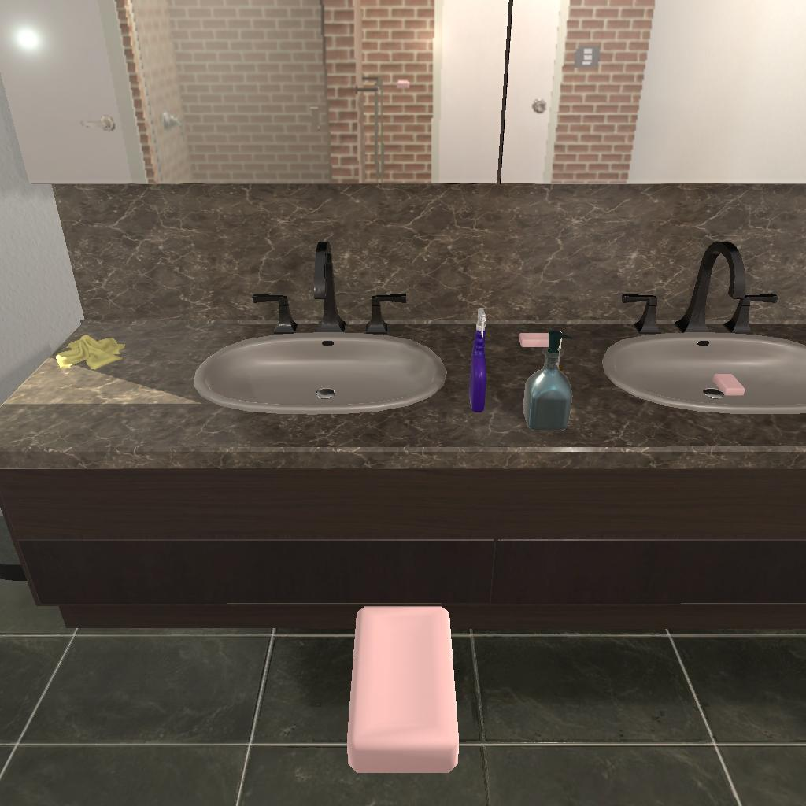

---------------------------------------------------------task: 27---------------------------------------------------------
--------------------------------------------------------------------------------------------------------------------------------------------------------------------
--------------------------------------------------------------------------------------------------------------------------------------------------------------------
Step:--------------------------------------------------------------------------11-------------------------------------------------------------------------------
----------------------------------------
VLM Prompt:
**Task**
Please perform as an embodied AI agent. Our final objective is to put two soapbottle in garbagecan. Below is the plan for completing the task, the current observation, alongside historical data and admissible actions for the next step. Please determine the best action for the next step!
**Plan**
Below is a detailed step-by-step plan to complete the task.
1. Find a soap bottle.
2. Pick up the soap bottle.
3. Find a garbage can.
4. Place the picked-up soap bottle in the garbage can.
5. Find another soap bottle.
6. Pick up the soap bottle.
7. Return to the previously located garbage can.
8. Place the picked-up soap bottle in the garbage can with the other soap bottle.
**Current Observation**
Displayed is an image capturing the current position of the agent.
**History Information**
Displayed are the previous observations with their corresponding actions.
Current State 1:
1. Place: Bathroom
2. Step Index in Plan: 1
3. Objects: Soap bottle, countertop, toilet paper roll
4. Action: Go to garbagecan 1
Current State 2:
1. Place: Bathroom
2. Step Index in Plan: 1
3. Objects: Soap bottle
4. Action: Go to countertop 1
Current State 3:
1. Place: Bathroom
2. Step Index in Plan: 1
3. Objects: Soap bottle, countertop, cloth
4. Action: Take soapbottle 2 from countertop 1
Current State 4:
1. Place: Bathroom
2. Step Index in Plan: 1
3. Objects: Soapbottle 2, Countertop 1
4. Action: Examine soapbottle 2
Current State 5:
1. Place: Bathroom
2. Step Index in Plan: 2
3. Objects: Soap bottle
4. Action: Put soap bottle 2 on countertop 1
Current State 6:
1. Place: Countertop
2. Step Index in Plan: 2
3. Objects: Soap bottle
4. Action: Go to garbagecan 1
Current State 7:
1. Place: Countertop 1
2. Step Index in Plan: 2
3. Objects: Soapbottle 2, Garbagecan 1
4. Action: Put soapbottle 2 in/on garbagecan 1
Current State 8:
1. Place: Bathroom
2. Step Index in Plan: 3
3. Objects: Soap bottle
4. Action: Go to countertop 1
Current State 9:
1. Place: Countertop 1
2. Step Index in Plan: 5
3. Objects: Soap bottle
4. Action: Go to countertop 1
Current State 10:
1. Place: Bathroom, at the sink countertop
2. Step Index in Plan: 5
3. Objects: Cloth, Soap Bar
4. Action: Take soapbar 1 from countertop 1
Current State 11:
1. Place: Bathroom countertop
2. Step Index in Plan: 5
3. Objects: Soap bar
4. Action: Go to drawer 1
**Admissible Actions**
(1): go to sinkbasin 1
(2): go to sink 1
(3): go to garbagecan 1
(4): go to drawer 2
(5): go to sink 2
(6): go to sinkbasin 2
(7): go to toilet 1
(8): go to handtowelholder 1
(9): open drawer 1
(10): close drawer 1
(11): put soapbar 1 in/on drawer 1
(12): examine soapbar 1
**Analysis Guideline**
1. Analyze the **History Information** and determine our current step in the plan and our current place.
2. List all visible objects related to the task in the current observation.
3. Analyze the objects in the current observation based on the history and the requirements for the current step, and then determine if we can complete the step with the current observation.
4. Analyze and decide on the most appropriate action to take.
5. Summarize the analysis using the following format: "Analysis: [The summarization of the analysis], The Most Appropriate Action: (i which is the integer.): [Selected action]"
**Notes**
1. We must complete each step of the plan in order and cannot skip steps when the previous ones are not finished.
2. For "Go to" actions listed as "go to xxx [n]", interpret this as there are n distinct actions available: "go to xxx 1", "go to xxx 2", ..., "go to xxx n". Select one specific action from these options instead of using "go to xxx [n]".
3. If receptacles such as drawers, cabinets, and so forth are closed in the current observation, we may try to open them.
4. Pay attention to synonyms and ensure clarity in the terms used.
5. If there is no history available, we are at the first step and the current place is "Unknown".
6. The most appropriate action must be in the **Admissible Actions**, and we cannot generate a new action that is not in the **Admissible Actions**.
**Answer**
Please select the most suitable action by following the **Analysis Guideline**, keeping the above **Notes** in mind.
----------------------------------------
----------------------------------------
VLM Response:
Analysis: Based on the History Information, we have completed up to step 5 of the plan, which is to find another soap bottle. The current observation shows us in the bathroom at the sink countertop, which correlates with Current State 10 and 11 in the History Information. Visible objects related to the task in the current observation are a soap bar and a cloth; however, we are looking for a soap bottle, not a soap bar. The current observation does not allow us to complete the current step as the required object, a soap bottle, is not present. The most appropriate action to take next would be to go to another location in search of the second soap bottle, as none are visible on the countertop.
The Most Appropriate Action: (3): go to garbagecan 1
----------------------------------------
----------------------------------------
>>> Refine VLM Response and Get Pure Action: go to garbagecan 1
----------------------------------------
-----------------------------------------------------------------
Running time: 11.880886554718018 seconds
Total Money: 13.77911999999999
-----------------------------------------------------------------
-----------------------------------------------------------------
Summarization Prompt:
**Context**
Analysis: Based on the History Information, we have completed up to step 5 of the plan, which is to find another soap bottle. The current observation shows us in the bathroom at the sink countertop, which correlates with Current State 10 and 11 in the History Information. Visible objects related to the task in the current observation are a soap bar and a cloth; however, we are looking for a soap bottle, not a soap bar. The current observation does not allow us to complete the current step as the required object, a soap bottle, is not present. The most appropriate action to take next would be to go to another location in search of the second soap bottle, as none are visible on the countertop.
The Most Appropriate Action: (3): go to garbagecan 1
**Summary Format**
1. Place: [Specify the current location]
2. Step Index in Plan: [Dispkay the current step number in the plan before taking the current action]
3. Objects: [List the objects relevant to the task]
4. Action: [Describe the most appropriate action without the "(x)" and keep the integer of the object]
Please analyze the **Context** and summarize the analysis using the **Summary Format**.
-----------------------------------------------------------------
-----------------------------------------------------------------
Summarization Response:
1. Place: Bathroom at the sink countertop
2. Step Index in Plan: 5
3. Objects: Soap bar, cloth
4. Action: Go to garbagecan 1
-----------------------------------------------------------------
-----------------------------------------------------------------
Text Observation:You arrive at loc 3. On the garbagecan 1, you see a handtowel 1, a soapbottle 1, a toiletpaper 1, a cloth 1, a soapbottle 2, a scrubbrush 1, and a plunger 1.
-----------------------------------------------------------------
UNSUCCEED